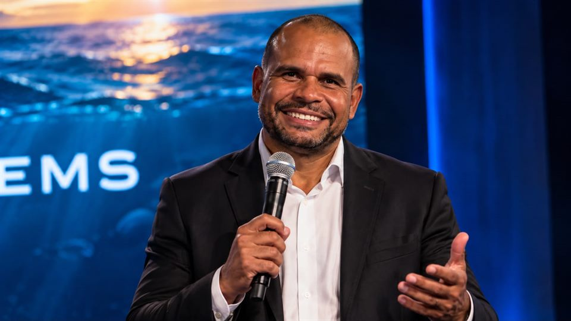
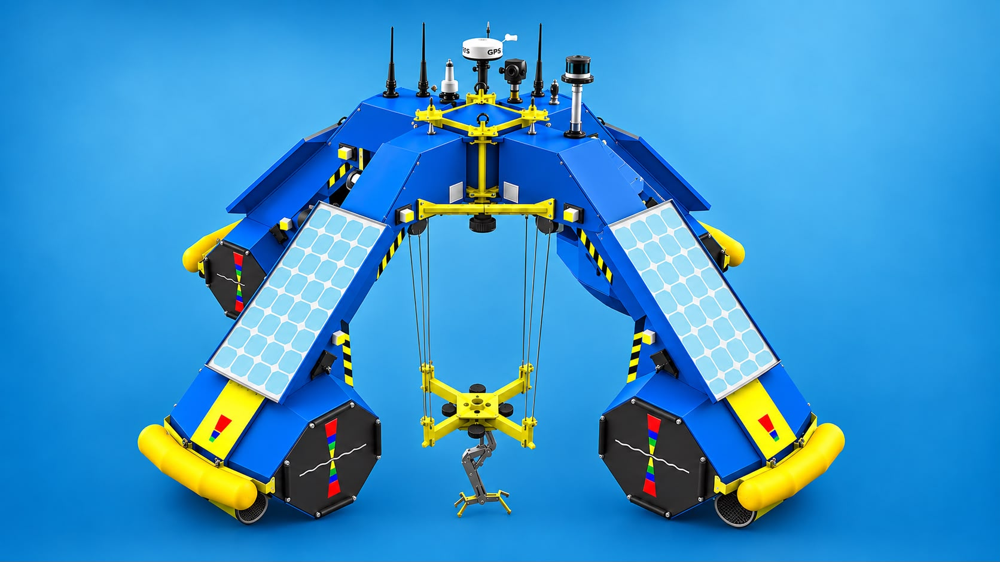
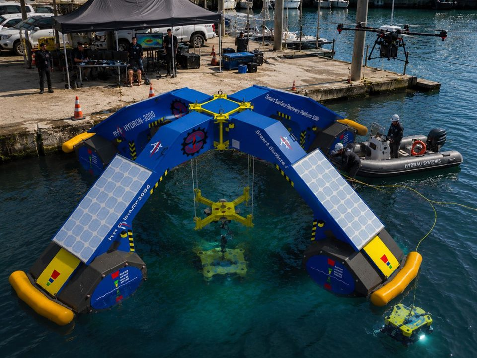
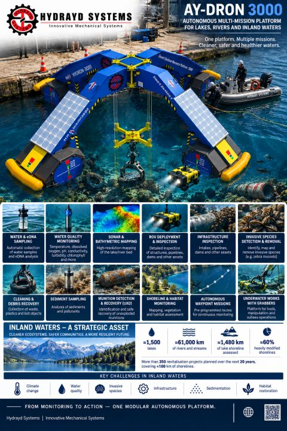
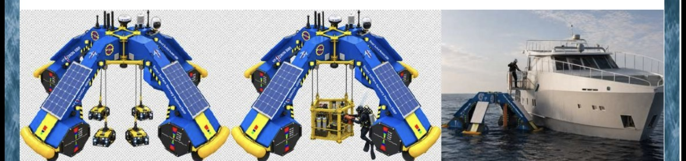

Proyecto actual
AY-DRON 3000
Proyecto insignia de la empresa: una plataforma acuática autónoma, modular y multifuncional, en fase de desarrollo.
Ver el proyectoInnovative Mechanical Systems
HYDRAYD SYSTEMS desarrolla soluciones para los sectores naval, marítimo e industrial combinando ingeniería mecánica, diseño 2D/3D, automatización, robótica y tecnologías autónomas.
La empresa
HYDRAYD SYSTEMS — Innovative Mechanical Systems es una startup tecnológica especializada en sistemas mecánicos inteligentes, robótica marítima y plataformas autónomas. Desarrollamos soluciones para los sectores naval, marítimo e industrial combinando ingeniería mecánica, diseño 2D/3D, automatización, robótica y tecnologías autónomas.
Sistemas mecánicos inteligentes, robótica marítima y plataformas autónomas como foco de desarrollo tecnológico propio.
Soluciones orientadas a astilleros, empresas industriales y organizaciones de investigación.
Trabajo abierto con centros tecnológicos, universidades e instituciones públicas.

Fundador
Fundador de HYDRAYD SYSTEMS
Más de 20 años de experiencia siguiendo de cerca las cadenas de producción de grandes empresas, con desarrollo de soluciones técnicas para la manufactura industrial y la construcción naval.
Esa base multidisciplinar es la que sostiene HYDRAYD SYSTEMS: diseño, ingeniería, fabricación e implementación entendidos como un único proceso técnico.
+20
años de experiencia siguiendo cadenas de producción de grandes empresas
Competencias técnicas
Enfoque profesional
Innovación, calidad, productividad y eficiencia operativa, con el objetivo de desarrollar soluciones técnicas prácticas.
Misión
Aportar una capacidad técnica multidisciplinar en las fases de diseño, ingeniería, fabricación e implementación.
Marcas desarrolladas
Productos exclusivos desarrollados y comercializados bajo las marcas Ateliê do Engenheiro y 2CENTIMETER DESIGN.
Ingeniería y servicios
Áreas de competencia que estructuran el trabajo técnico de HYDRAYD SYSTEMS y sobre las que se construyen sus proyectos.
01
Concepción y desarrollo de sistemas mecánicos mediante diseño 2D/3D para aplicaciones industriales y marítimas.
02
Diseño y fabricación de máquinas y equipos para procesos de producción.
03
Carpintería metálica a medida, mobiliario en metal y madera, y procesos de soldadura MIG, MAG, TIG y arco.
04
Seguimiento de cadenas de producción del sector naval y desarrollo de soluciones técnicas para astilleros.
05
Sistemas robóticos y arquitecturas modulares concebidos para operaciones sin tripulación en entornos acuáticos.
06
Análisis de requisitos técnicos complejos y desarrollo de soluciones para proyectos industriales, comerciales y residenciales.
Áreas de competencia profesional de la empresa. No todas se ofrecen como servicio independiente: cada colaboración técnica se define según el alcance del proyecto correspondiente.

Proyecto insignia
Una plataforma acuática autónoma, modular y multifuncional en desarrollo.
AY-DRON 3000 es el principal proyecto de HYDRAYD SYSTEMS: una plataforma acuática autónoma, modular y multifuncional concebida para adaptarse a distintos contextos operativos. Se encuentra en fase de desarrollo y sus aplicaciones previstas se detallan más abajo.
Líneas de diseño descritas para el proyecto
Líneas de diseño del proyecto, en fase de desarrollo. No representan capacidades validadas en pruebas ni disponibilidad comercial. Especificaciones técnicas detalladas disponibles tras la confirmación del proyecto.
Galería técnica
Material gráfico auténtico del proyecto, facilitado por la empresa y presentado tal como fue recibido.

Protótipo de la plataforma acuática en una operación de superficie en el puerto.

Infográfico oficial del AY-DRON 3000.

Configuraciones modulares previstas para la plataforma.
Material gráfico auténtico del proyecto. Las imágenes muestran el estado de desarrollo y no acreditan capacidades validadas en pruebas, certificaciones ni disponibilidad comercial.
Aplicaciones previstas
Áreas de aplicación previstas para la plataforma. No corresponden a operaciones comerciales ya realizadas.
01
Reconocimiento visual y sensorial de estructuras e instalaciones.
02
Acciones técnicas sobre elementos accesibles en entornos acuáticos.
03
Localización y recuperación de elementos en el entorno marítimo.
04
Soporte a campañas y estudios en el medio marino.
05
Trabajos subacuáticos con el mecanismo central de cable.
06
Tareas de apoyo en instalaciones de acuicultura.
07
Seguimiento de infraestructuras e instalaciones marítimas.
Cartera de proyectos
HYDRAYD SYSTEMS busca desarrollar tecnologías propias y ofrecer servicios especializados, en colaboración con astilleros, empresas industriales, centros tecnológicos, universidades e instituciones públicas.
Proyecto actual
Proyecto insignia de la empresa: una plataforma acuática autónoma, modular y multifuncional, en fase de desarrollo.
Ver el proyectoEn evolución
La estructura de la empresa admite nuevos proyectos, soluciones técnicas y servicios verificados a medida que se consolidan.
Visión de empresa
HYDRAYD SYSTEMS nace con una ambición técnica clara: desarrollar sistemas mecánicos inteligentes capaces de responder a los retos del entorno marítimo e industrial.
Trabajamos con una visión a largo plazo, abierta a la colaboración con astilleros, empresas industriales, centros tecnológicos, universidades e instituciones públicas, y buscamos soluciones que puedan evolucionar con las necesidades de la industria marítima europea.
Bilbao / Bizkaia, España
Ingeniería mecánica y diseño como base de cada proyecto técnico.
Integración de mecánica, control y sensores en sistemas funcionales.
Soluciones concebidas para el entorno marítimo y subacuático.
Contacto
Cuéntanos tu reto técnico y exploramos cómo la ingeniería mecánica, la automatización y la robótica marítima pueden aplicarse a él. Atendemos consultas comerciales y propuestas de colaboración.
Bilbao, Bizkaia (España) — proyectos desarrollados en el entorno de BIC Ezkerraldea, Barakaldo.